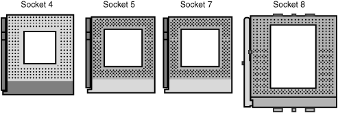
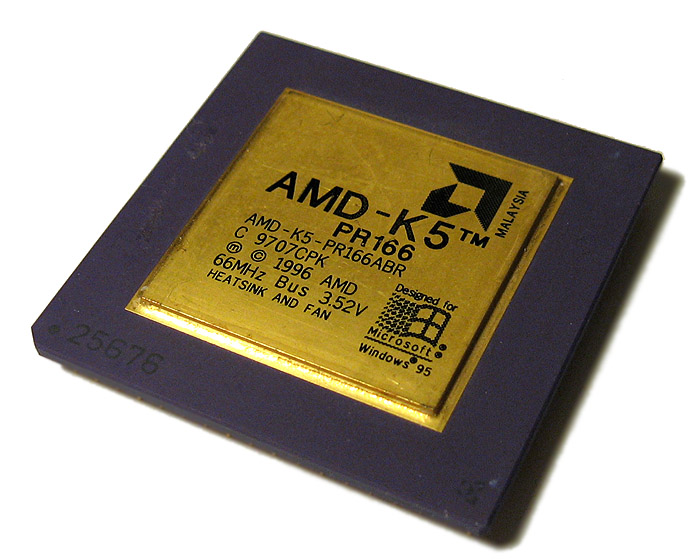

Histoire :
L'AMD K5 est un miscroprecesseur x86, pour Soket 5, 6 et 7 construit par AMD, presente
pour la premiere foix en 1995. Il remplaca l'Am5x86, l'AMD k5 possede
une architecture interne en RISC. Il y avait deux sortes de processeurs K5, appelés en interne les séries « 5k86 » et « K5 »,
tous les deux lancés sous le nom K5.
Les modèles lancés furent les suivants :
SSA/5 :
K5 PR75, 1995
K5 PR90, 1995
K5 PR100, 1996
5k86
K5 PR120, 1996
K5 PR133, 1996
K5 PR166, 1997
K5 PR200, 1997
MODELS FREQUANCE FSB MULTIPLICATEUR TENSION TDP SOCKET DATE DE SORTIE PRIX AU LANCEMENT
K5 75 75 Mhz 50 Mhz 1.5x 3,525 V 11,8 W 5 et 7 27 Mars 1996 75 $
K5 90 90 Mhz 60 Mhz 1.5x 3,525 V 14,3 W 5 et 7 27 Mars 1996 99 $
K5 100 100 Mhz 66 Mhz 1.5x 3,525 V 15,8 W 5 et 7 17 Juin 1996 84 $
K5 120 90 Mhz (noté 120 Mhz) 60 Mhz 1.5x 3,525 V 12,6 W 5 et 7 7 octobre 1996 106 $
K5 133 100 Mhz (noté 133 Mhz) 66 Mhz 1.5x 3,525 V 14 W 5 et 7 7 octobre 1996 134 $
K5 150 105 Mhz (noté 150 Mhz) 60 MHZ 1.75x 3,525 V ? W 5 et 7 Janvier 1997 106 $
K5 166 116.7 Mhz (noté 166 Mhz) 66 Mhz 1.75x 3,525 V 16,4 W 5 et 7 13 Janvier 1997 167 $
K5 200 133 Mhz (noté 200 Mhz) 66 MHz 2x 3,525 V ? W 5 et 7 1997


Desrciption :
- Clock speed : 75 Mhz - 133 Mhz
- Nbr de core : 1
- Architecture : 32 bit
- Transistor Count : 4,3 Million
- Fabrication Process : 500 - 350 nm